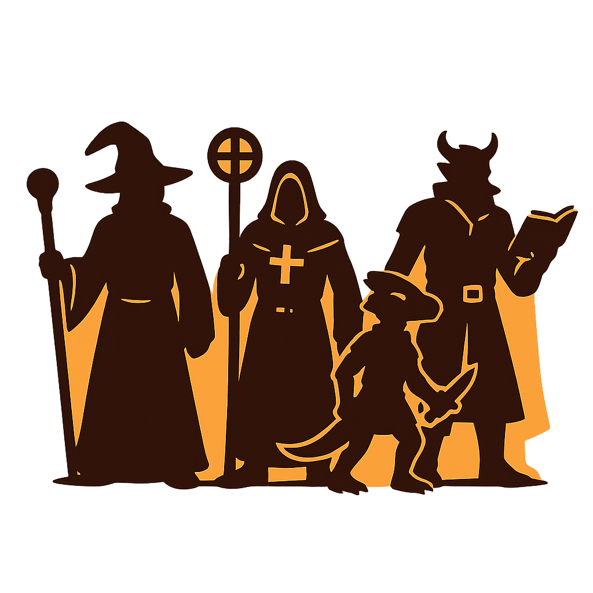
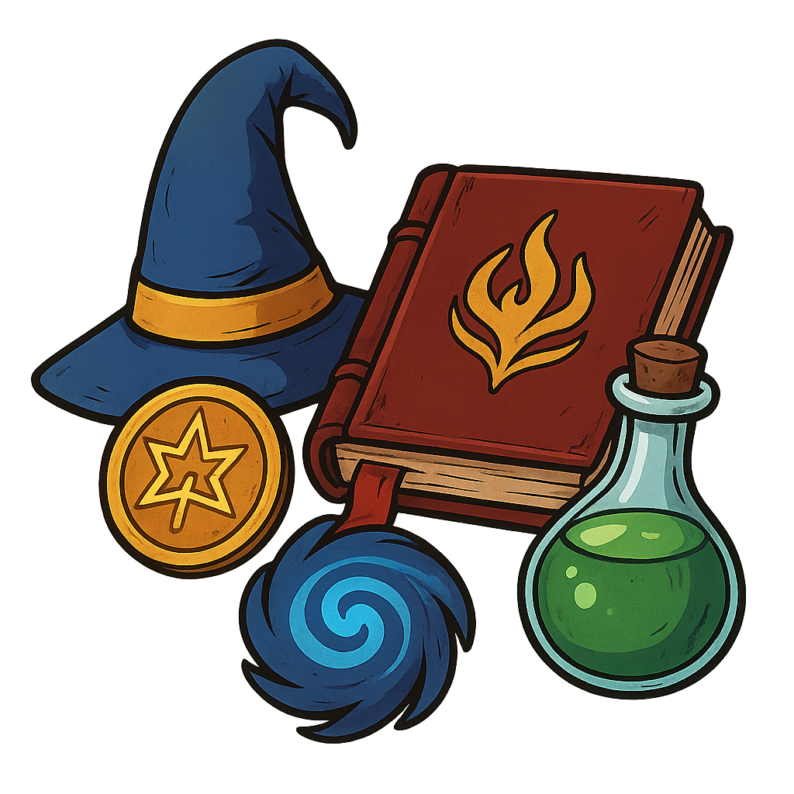

Recursos
Aquí encontrarás material de referencia de la campaña: personajes, handouts, libros y curiosidades. La sección Libros y Pergaminos abre en una página dedicada (con modal estilo pergamino).

Los Aventureros de Valverde
La banda que se cruzó con Adler: fichas y recursos de la partida.

Libros y Pergaminos
Compendio de libros, notas y handouts leídos por los personajes.

Curiosidades, Arcana y Más
Pequeñas notas, extraños artefactos y curiosidades encontradas en la campaña.
Administración: si tienes permisos, puedes añadir materiales desde Admin — Recursos.